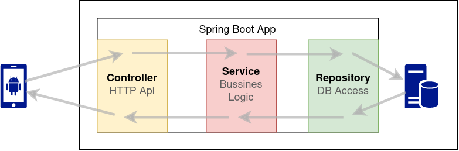

Spring Boot <--- HTTP / JSON ---> consumidor de la API (movil, browser, postman)
-->
Database server
Instal·la Docker a la màquina host:
root@host
curl -fsSL https://get.docker.com -o get-docker.sh && sh get-docker.sh
Inicia un contenidor Docker amb la base de dades PostreSQL:
@host
docker run -dp 5432:5432 -ePOSTGRES_PASSWORD=abcd -ePOSTGRES_USER=user -ePOSTGRES_DB=db -v:/var/lib/postgresql postgres
Si ja tens un postgres en marxa al teu host, es possible que et done el següent error:
docker: Error response from daemon: [...]: Bind for 0.0.0.0:5432 failed: port is already allocated.
La solució és, o bé parar el postgres que tens en marxa, o bé utilitzar un nou port per a aquesta instància:
docker run -dp 9999:5432 -ePOSTGRES_PASSWORD=abcd -ePOSTGRES_USER=user -ePOSTGRES_DB=db -v:/var/lib/postgresql postgres
Si canvies el port, s'haurà de posar el mateix a la configuració de l'aplicació
Spring initializr
Accedeix a spring initializr per a generar un projecte Spring Boot
-
Selecciona les següents opcions
- Project: Gradle - Groovy
- Language: Java
- Spring Boot: 3.0.1
- Project Metadata:
- Group: com.example
- Artifact: SpringBootMovieAPI
- Name: SpringBootMovieAPI
- Package name: com.example.SpringBootMovieAPI
- Packaging: JAR
- Java: 17
-
Afegeix les dependències:
- Spring Web
- Spring Data JPA
- PostgreSQL Driver
-
Genera el projecte i descomprimeix-lo.
-
Obre'l amb IntelliJ
Configura l'accés de l'aplicació a la base de dades:
src/main/resources/application.properties
spring.datasource.url=jdbc:postgresql://localhost:5432/db
spring.datasource.username=user
spring.datasource.password=abcd
spring.jpa.properties.hibernate.jdbc.lob.non_contextual_creation=true
spring.jpa.properties.hibernate.dialect=org.hibernate.dialect.PostgreSQLDialect
Database migrations
La llibreria Flyway permet gestionar els canvis en l'esquema de la base de dades.
És a dir, crear/eliminar/modifcar taules, dades, etc...
Afegeix Flyway al projecte:
build.gradle
plugins {
...
id 'org.flywaydb.flyway' version '9.8.1'
}
flyway {
configFiles = ['src/main/resources/application.properties']
}
dependencies {
...
implementation 'org.flywaydb:flyway-core:9.8.1'
}
Configura els paràmetres d'accés de la llibreria Flyway a la base de dades:
src/main/resources/application.properties
# ...
flyway.url=jdbc:postgresql://localhost:5432/db
flyway.schemas=public
flyway.user=user
flyway.password=abcd
spring.flyway.baseline_on_migrate=true
Crea una primera versió de l'esquema de la base de dades. Les migracions de l'esquema de la base de dades es
defineixen creant arxius al directori resources/db/migration/. El nom d'aquests arxius ha
de seguir una nomenclatura específica (veure: migrations#naming)
Crea l'arxiu resources/db/migration/V1__createdatabase.sql:
resources/db/migration/V1__createdatabase.sql
CREATE TABLE IF NOT EXISTS movie (
movieid uuid NOT NULL DEFAULT gen_random_uuid() PRIMARY KEY,
title text,
synopsis text,
imageurl text);
CREATE TABLE IF NOT EXISTS actor (
actorid uuid NOT NULL DEFAULT gen_random_uuid() PRIMARY KEY,
name text,
imageurl text);
CREATE TABLE IF NOT EXISTS genre (
genreid uuid NOT NULL DEFAULT gen_random_uuid() PRIMARY KEY,
label text);
CREATE TABLE IF NOT EXISTS movie_actor (
movieid uuid REFERENCES movie(movieid) ON DELETE CASCADE,
actorid uuid REFERENCES actor(actorid) ON DELETE CASCADE,
PRIMARY KEY (movieid, actorid));
CREATE TABLE IF NOT EXISTS movie_genre (
movieid uuid REFERENCES movie(movieid) ON DELETE CASCADE,
genreid uuid REFERENCES genre(genreid) ON DELETE CASCADE,
PRIMARY KEY (movieid, genreid));
INSERT INTO movie(title, synopsis, imageurl) VALUES
('Movie One','This is the One Movie','movie1.jpg'),
('Movie Two','The Two Movie is the next','movie2.jpg'),
('Movie Three','The Trilogy','movie3.jpg'),
('Movie Four','Four movies is too much','movie4.jpg');
INSERT INTO actor(name, imageurl) VALUES
('Actor One','actor1.jpg'),
('Actor Two','actor2.jpg'),
('Actor Three','actor3.jpg'),
('Actor Four','actor4.jpg'),
('Actor Five','actor5.jpg');
INSERT INTO genre(label) VALUES
('Genre One'),
('Genre Two'),
('Genre Three');
INSERT INTO movie_actor VALUES
((SELECT movieid FROM movie WHERE title='Movie One'),(SELECT actorid FROM actor WHERE name='Actor One')),
((SELECT movieid FROM movie WHERE title='Movie One'),(SELECT actorid FROM actor WHERE name='Actor Two')),
((SELECT movieid FROM movie WHERE title='Movie Two'),(SELECT actorid FROM actor WHERE name='Actor Three')),
((SELECT movieid FROM movie WHERE title='Movie Two'),(SELECT actorid FROM actor WHERE name='Actor Four')),
((SELECT movieid FROM movie WHERE title='Movie Three'),(SELECT actorid FROM actor WHERE name='Actor Four')),
((SELECT movieid FROM movie WHERE title='Movie Three'),(SELECT actorid FROM actor WHERE name='Actor Five')),
((SELECT movieid FROM movie WHERE title='Movie Four'),(SELECT actorid FROM actor WHERE name='Actor One')),
((SELECT movieid FROM movie WHERE title='Movie Four'),(SELECT actorid FROM actor WHERE name='Actor Four'));
INSERT INTO movie_genre VALUES
((SELECT movieid FROM movie WHERE title='Movie One'),(SELECT genreid FROM genre WHERE label='Genre One')),
((SELECT movieid FROM movie WHERE title='Movie One'),(SELECT genreid FROM genre WHERE label='Genre Two')),
((SELECT movieid FROM movie WHERE title='Movie Two'),(SELECT genreid FROM genre WHERE label='Genre One')),
((SELECT movieid FROM movie WHERE title='Movie Three'),(SELECT genreid FROM genre WHERE label='Genre One')),
((SELECT movieid FROM movie WHERE title='Movie Three'),(SELECT genreid FROM genre WHERE label='Genre Two')),
((SELECT movieid FROM movie WHERE title='Movie Three'),(SELECT genreid FROM genre WHERE label='Genre Three'));
Spring boot API
L'arquitectura bàsica de la nostra ApiHttp amb Spring Boot serà aquesta:

Model
Les classes Model serveixen per a crear objectes amb les dades i així poder transportar-les d'un component a un altre.
Entity
Començarem creant la classe Movie que ens servirà per a transportar les dades d'una pel·lícula:
src/main/java/com/example/SpringBootMovieAPI/domain/model/Movie.java
package com.example.SpringBootMovieAPI.domain.model;
import jakarta.persistence.*;
import java.util.UUID;
@Entity
@Table(name = "movie")
public class Movie {
@Id
@GeneratedValue(strategy = GenerationType.AUTO)
public UUID movieid;
public String title;
public String imageurl;
}
Repository
src/main/java/com/example/SpringBootMovieAPI/repository/MovieRepository.java
package com.example.SpringBootMovieAPI.repository;
import com.example.SpringBootMovieAPI.domain.model.Movie;
import org.springframework.data.jpa.repository.JpaRepository;
import java.util.UUID;
public interface MovieRepository extends JpaRepository<Movie, UUID> {
}
Controller
src/main/java/com/example/SpringBootMovieAPI/controller/MovieController.java
package com.example.SpringBootMovieAPI.controller;
import com.example.SpringBootMovieAPI.domain.model.Movie;
import com.example.SpringBootMovieAPI.repository.MovieRepository;
import org.springframework.beans.factory.annotation.Autowired;
import org.springframework.http.HttpStatus;
import org.springframework.web.bind.annotation.*;
import org.springframework.web.server.ResponseStatusException;
import java.util.List;
import java.util.UUID;
@RestController
@RequestMapping("/movies")
public class MovieController {
@Autowired private MovieRepository movieRepository;
@GetMapping("/")
public List<Movie> findAllMovies() {
return movieRepository.findAll();
}
@PostMapping("/")
public Movie createMovie(@RequestBody Movie movie) {
return movieRepository.save(movie);
}
@GetMapping("/id/{id}")
public Movie findById(@PathVariable UUID id) {
return movieRepository.findById(id)
.orElseThrow(() -> new ResponseStatusException(HttpStatus.NOT_FOUND, "Movie '%s' not found".formatted(id)));
}
}
Prova l'aplicació:
Get all movies:
curl localhost:8080/movies/
Get movie by id:
curl localhost:8080/movies/id/{id}
Create movie:
curl -X POST -H "Content-Type: application/json" -d '{"title":"Movie Five", "imageurl":"movie5.jpg"}' http://localhost:8080/movies/
New --json option, jq, jo: https://daniel.haxx.se/blog/2022/02/02/curl-dash-dash-json/
curl --json '{"title":"Movie Five", "imageurl":"movie5.jpg"}' http://localhost:8080/movies
curl -s localhost:8080/movies/ | jq
jo title="Movie Five" imageurl=movie5.jpg | curl --json @- http://localhost:8080/movies/ | jq
File uploads
Afegirem una migració de la base de dades per a crear una taula que emmagatzemi els arxius que carregin (upload)
Crea aquest arxiu de migració:
src/main/resources/db/migration/V2__filetable.sql
CREATE TABLE file (
fileid UUID NOT NULL DEFAULT gen_random_uuid() PRIMARY KEY,
contenttype TEXT,
data bytea);
Creem el model:
src/main/java/com/example/SpringBootMovieAPI/domain/model/File.java
package com.example.SpringBootMovieAPI.domain.model;
import jakarta.persistence.*;
import java.util.UUID;
@Entity
@Table(name = "file")
public class File {
@Id
@GeneratedValue(strategy = GenerationType.AUTO)
public UUID fileid;
public String contenttype;
public byte[] data;
public File(){}
public File(String contenttype, byte[] data) {
this.contenttype = contenttype;
this.data = data;
}
}
Creem el repository:
src/main/java/com/example/SpringBootMovieAPI/repository/FileRepository.java
package com.example.SpringBootMovieAPI.repository;
import com.example.SpringBootMovieAPI.domain.model.File;
import org.springframework.data.jpa.repository.JpaRepository;
import java.util.UUID;
public interface FileRepository extends JpaRepository<File, UUID> {
}
I per últim el controlador:
src/main/java/com/example/SpringBootMovieAPI/controller/FileController.java
package com.example.SpringBootMovieAPI.controller;
import com.example.SpringBootMovieAPI.domain.model.File;
import com.example.SpringBootMovieAPI.repository.FileRepository;
import org.springframework.beans.factory.annotation.Autowired;
import org.springframework.http.HttpStatus;
import org.springframework.web.bind.annotation.*;
import org.springframework.web.multipart.MultipartFile;
import org.springframework.web.server.ResponseStatusException;
import java.io.IOException;
import java.util.List;
import java.util.UUID;
import java.util.stream.Collectors;
@RestController
@RequestMapping("/files")
public class FileController {
@Autowired FileRepository fileRepository;
@GetMapping("/")
public List<File> getAll() {
return fileRepository.findAll();
}
@PostMapping("/")
public String upload(@RequestParam("file") MultipartFile uploadedFile) throws IOException {
return fileRepository.save(new File(uploadedFile.getContentType(), uploadedFile.getBytes())).fileid.toString();
}
@GetMapping("/id/{id}")
public File getFileById(@PathVariable UUID id) {
return fileRepository.findById(id)
.orElseThrow(()-> new ResponseStatusException(HttpStatus.NOT_FOUND, "File '%s' not found".formatted(id)));
}
@GetMapping("/{id}")
public byte[] getFile(@PathVariable UUID id) {
return fileRepository.findById(id).map(f -> f.data)
.orElseThrow(() -> new ResponseStatusException(HttpStatus.NOT_FOUND, "File '%s' not found".formatted(id)));
}
/* web upload */
@GetMapping("/web") public String webView() { return "<form method='POST' action='/files/web' enctype='multipart/form-data' style='display:flex;'><input id='file' type='file' name='file' style='display:none' onchange='preview.src=window.URL.createObjectURL(event.target.files[0])'><label for='file' style='border:1px dashed #999'><img id='preview' style='width:6em;max-height:6em;object-fit:contain;border:none'></label><input type='submit' style='background:#0096f7;color: white;border: 0;border-radius: 3px;padding: 8px;' value='Upload'></form><div style='display:flex;flex-wrap:wrap;gap:1em;'>" + fileRepository.findAll().stream().map(file -> "<img src='/files/"+file.fileid+"' style='width:12em;height:12em;object-fit:contain'>").collect(Collectors.joining()) + "</div>";}
@PostMapping("/web") public String webUpload(@RequestParam("file") MultipartFile uploadedFile) throws IOException { upload(uploadedFile); return webView(); }
}
Prova l'endpoint /files/:
Llista els arxius:
curl localhost:8080/files/
Puja un arxiu:
curl -F file=@foto.jpg localhost:8080/files/
Obté les dades d'un arxiu pel seu id:
curl localhost:8080/files/id/{id}
Obté el contingut d'un arxiu pel seu id:
curl localhost:8080/files/{id}
Alternativament, utilitza la mini interfície web: http://localhost:8080/files/web
File Size Limit:
src/main/resources/application.properties
spring.servlet.multipart.max-file-size=100MB
spring.servlet.multipart.max-request-size=100MB
Autenticació i autorització
JDBC Authentication
Crea aquest arxiu de migració:
src/main/resources/db/migration/V3__usertable.sql
CREATE TABLE users(
username varchar(50) NOT NULL PRIMARY KEY,
password varchar(500) NOT NULL,
enabled boolean NOT NULL
);
CREATE TABLE authorities (
username varchar(50) NOT NULL PRIMARY KEY REFERENCES users(username),
authority varchar(50) NOT NULL
);
-- afegim un usuari de prova: user/password
INSERT INTO users VALUES ('user', '{bcrypt}$2a$10$GRLdNijSQMUvl/au9ofL.eDwmoohzzS7.rmNSJZ.0FxO/BTk76klW', true);
INSERT INTO authorities VALUES ('user', 'ROLE_USER');
Afegeix la llibreria spring-boot-starter-security:
build.gradle
dependencies {
...
implementation 'org.springframework.boot:spring-boot-starter-security'
}
Afegim la configuració de seguretat:
src/main/java/com/example/SpringBootMovieAPI/config/SecurityConfiguration.java
package com.example.SpringBootMovieAPI.config;
import org.springframework.beans.factory.annotation.Autowired;
import org.springframework.context.annotation.Bean;
import org.springframework.context.annotation.Configuration;
import org.springframework.security.config.annotation.web.builders.HttpSecurity;
import org.springframework.security.crypto.bcrypt.BCryptPasswordEncoder;
import org.springframework.security.provisioning.JdbcUserDetailsManager;
import org.springframework.security.provisioning.UserDetailsManager;
import org.springframework.security.web.SecurityFilterChain;
import javax.sql.DataSource;
import static org.springframework.security.config.Customizer.withDefaults;
@Configuration
public class SecurityConfiguration {
@Autowired
private DataSource dataSource;
@Bean
public BCryptPasswordEncoder getPasswordEncoder() {
return new BCryptPasswordEncoder();
}
@Bean
public UserDetailsManager users(DataSource dataSource) {
return new JdbcUserDetailsManager(dataSource);
}
@Bean
public SecurityFilterChain filterChain(HttpSecurity http) throws Exception {
return http.authorizeHttpRequests((authz) ->
authz
.requestMatchers("/users/register/").permitAll()
// .requestMatchers("/h2-console/").permitAll()
.anyRequest().permitAll()
)
.httpBasic(withDefaults())
.csrf().disable()
.headers().frameOptions().disable().and() // http://localhost:8080/h2-console
.build();
}
}
Registre d'usuaris
Per al registre d'usuaris necessitarem una classe (DTO) que per guardar les dades que ens envia l'usuari (username i password):
Creem el model User:
src/main/java/com/example/SpringBootMovieAPI/domain/model/User.java
package com.example.SpringBootMovieAPI.domain.model;
import jakarta.persistence.*;
import java.util.Set;
@Entity
@Table(name="users")
public class User {
@Id
public String username;
public String password;
public boolean enabled;
@OneToMany(mappedBy="username")
public Set<Authority> authorities;
}
Creem el model Authority:
src/main/java/com/example/SpringBootMovieAPI/domain/model/Authority.java
package com.example.SpringBootMovieAPI.domain.model;
import jakarta.persistence.*;
@Entity
@Table(name="authorities")
public class Authority {
@Id
public String username;
public String authority;
}
Creem el DTO UserRegisterRequest per a rebre les dades que ens enviarà l'usuari:
src/main/java/com/example/SpringBootMovieAPI/domain/dto/UserRegisterRequest.java
public class UserRegisterRequest {
public String username;
public String password;
}
També necessitarem un controlador per atendre les peticions de registre:
src/main/java/com/example/SpringBootMovieAPI/controller/UserController.java
package com.example.SpringBootMovieAPI.controller;
import com.example.SpringBootMovieAPI.domain.dto.UserRegisterRequest;
import org.springframework.beans.factory.annotation.Autowired;
import org.springframework.security.core.userdetails.User;
import org.springframework.security.crypto.bcrypt.BCryptPasswordEncoder;
import org.springframework.security.provisioning.UserDetailsManager;
import org.springframework.web.bind.annotation.PostMapping;
import org.springframework.web.bind.annotation.RequestBody;
import org.springframework.web.bind.annotation.RequestMapping;
import org.springframework.web.bind.annotation.RestController;
@RestController
@RequestMapping("/users")
public class UserController {
@Autowired private BCryptPasswordEncoder passwordEncoder;
@Autowired private UserDetailsManager userDetailsManager;
@PostMapping("/register/")
public String register(@RequestBody UserRegisterRequest userRegisterRequest) {
if (userDetailsManager.userExists(userRegisterRequest.username)) return "ERROR: usuario existente";
userDetailsManager.createUser(User.builder()
.username(userRegisterRequest.username)
.password(passwordEncoder.encode(userRegisterRequest.password))
.roles("USER")
.build()
);
return "OK";
}
}
curl -X POST -H "Content-Type: application/json" -d '{"username":"gerard", "password":"gerard123"}' http://localhost:8080/users/register/
Per últim caldrà decidir a quins endpoints caldrà estar autenticat per a accedir i quins no. Per exemple, podem donar accés al registre però
requerir autenticació per a tot lo demés:
src/main/java/com/example/SpringBootMovieAPI/SecurityConfig.java
.requestMatchers("/users/register/").permitAll()
.anyRequest().authenticated()
curl --user pepe:pass123 localhost:8080/movies/
Maneig d'errors
spring.mvc.problemdetails.enabled=true
Per a que els mètodes REST retornin respostes de forma adequada podem utilitzar la classe ResponseEntity.
Aquesta classe té uns mètodes builder que ens permeten establir el HttpStatus,
les capçaleres HTTP i el cos de la resposta.
Haurem d'implementar els mètdoes Mapping dels controlladors de forma que retornin un objecte de classe ResponseEntity<?>
Per exemple, en el següent codi retornem l'status 200 (OK) i afegim al cos de la resposta l'objecte movie que tot just s'ha creat.
@PostMapping
public ResponseEntity<?> createMovie(@RequestBody Movie movie, Authentication authentication) {
Movie movie = movieRepository.save(movie);
return ResponseEntity.ok().body(movie);
}
L'objecte movie que hem posat al body() es serialitzarà a dades JSON així:
{
"movieid": "c4806e2b-2e19-4e32-a7cd-8ead8b32350e",
"title": "Movie Title",
"imageurl": "/url/to/image"
}
Projections
Una projecció és quan al "select" d'una consulta posem només un subconjunt de camps.
Per a fer-ho amb un JpaRepository primer definirem en un interface quins són els camps que volem seleccionar:
public interface ProjectionMovie {
UUID getMovieid();
String getTitle();
Set<ProjectionActor> getActors();
}
Veiem que en lloc de definir els camps, hem de definir getters seguint l'estàndard JavaBeans.
Després al Repository podem fer que les consultes retornin objectes conforme a aquests interfaces:
public interface MovieRepository extends JpaRepository<Movie, UUID> {
List<ProjectionMovie> findBy();
}
Açò funcionarà per a les consultes que JPA derivades del nom: Query Methods
Relacions
@ManyToMany
En una relació ManyToMany entre dues entitats hem d'escollir primer una de les dos entitats com la "propietària" de la relació i l'altra com a "no-propietària".
A l'entitat "pripietària" definirem les anotacions @ManyToMany i @JoinTable:
@Entity
@Table(name = "movie")
public class Movie {
@Id
@GeneratedValue(strategy = GenerationType.AUTO)
public UUID movieid;
public String title;
public String imageurl;
@ManyToMany
@JoinTable(name = "movie_actor", joinColumns = @JoinColumn(name = "movieid"), inverseJoinColumns = @JoinColumn(name = "actorid"))
public Set<Actor> actors;
}
A l'entitat "no-propietària" definirem l'anotació @ManyToMany fent referència al camp de l'entitat "propietària" que defineix la relació:
@Entity
@Table(name = "actor")
public class Actor {
@Id
@GeneratedValue(strategy = GenerationType.AUTO)
public UUID actorid;
public String name;
public String imageurl;
@ManyToMany(mappedBy = "actors")
public Set<Movie> movies;
}
Com la relació és bidireccional, quan la llibreria Jackson faci la serialització a JSON, es produeix una dependència circular (recursió infinita).
Podem tallar aquesta recursió amb l'anotació @JsonIgnoreProperties:
@Entity
@Table(name = "movie")
public class Movie {
@Id
@GeneratedValue(strategy = GenerationType.AUTO)
public UUID movieid;
public String title;
public String imageurl;
@ManyToMany
@JoinTable(name = "movie_actor", joinColumns = @JoinColumn(name = "movieid"), inverseJoinColumns = @JoinColumn(name = "actorid"))
@JsonIgnoreProperties("movies")
public Set<Actor> actors;
}
@Entity
@Table(name = "actor")
public class Actor {
@Id
@GeneratedValue(strategy = GenerationType.AUTO)
public UUID actorid;
public String name;
public String imageurl;
@ManyToMany(mappedBy = "actors")
@JsonIgnoreProperties("actors")
public Set<Movie> movies;
}